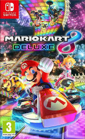

Mario Kart 8 Deluxe

Informació General
Mario Kart 8 Deluxe és un videojoc de carreres desenvolupat i publicat per Nintendo per a la consola Nintendo Switch. És una versió millorada del joc original llançat per a Wii U en 2014.
Característiques Principals
- 48 circuits de carreres
- 42 personatges jugables
- 5 modalitats de joc en el Mode Batalla
- Multijugador local per a fins a 8 jugadors
- Multijugador en línia per a fins a 12 jugadors
Modes de Joc
- Grand Prix
- Contrarellotge
- Carreres VS
- Mode Batalla (amb 5 variants):
- Batalla de Globus
- Batalla de Monedes
- Asalto al Sol
- Bob-ombardeo
- Patrulla Piraña
Característiques Addicionals
- Volant intel·ligent i acceleració automàtica per a jugadors principiants
- Possibilitat de portar dos objectes alhora
- Nou mode de 200cc per a més velocitat
- Competició per terra, mar i aire, i fins i tot per sostres i parets
- Contingut descarregable de pagament amb 48 pistes addicionals i 8 nous personatges jugables